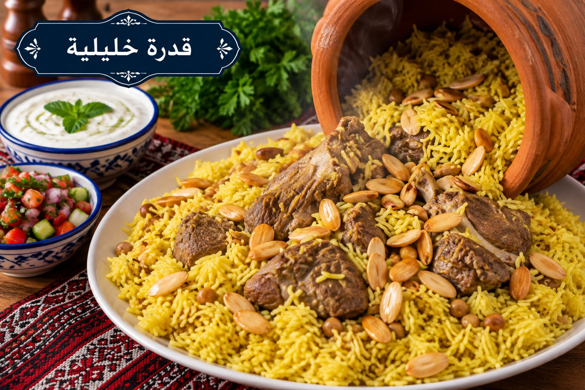

قدرة
قدرة خليلية باللحم والحمص

مقادير قدرة
- 1 كغ لحم غنم
- 3 أكواب أرز بسمتي
- 1 كوب حمص مسلوق
- 1 رأس ثوم
- 4½ أكواب مرق لحم
- 1½ ملعقة صغيرة ملح
- 1 ملعقة صغيرة بهار قدرة
- ½ ملعقة صغيرة فلفل أسود
- ½ ملعقة صغيرة كركم
- 5 حبات هيل
- 2 ملعقة كبيرة سمنة
طريقة عمل قدرة
- اسلقي اللحم مع الهيل حتى يطرى وأزيلي الرغوة واحتفظي بالمرق.
- اغسلي الأرز وانقعيه 20 دقيقة ثم صفيه.
- في قدر الفرن ضعي السمنة والثوم والحمص واللحم، ثم أضيفي الأرز والملح وبهار القدرة والفلفل والكركم.
- أضيفي 4½ أكواب من المرق الساخن. اتركيه يبدأ بالغليان ثم غطي القدر بإحكام.
- أدخليه فرنًا محمى على 180°م حتى ينضج الأرز ويمتص المرق، نحو 35–45 دقيقة، ثم أريحيه 10 دقائق قبل التقديم.